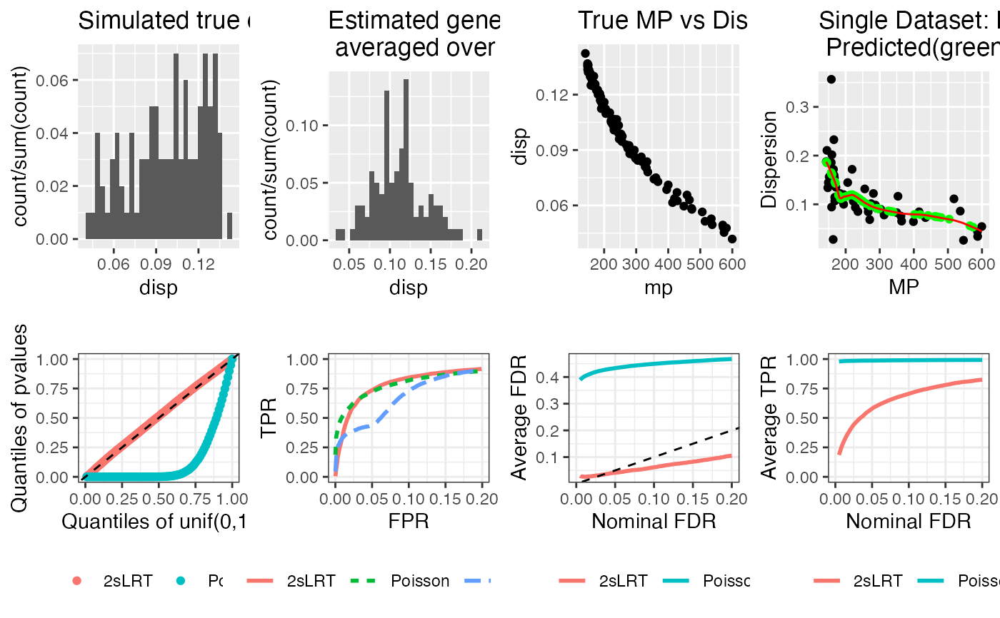

R/Hetero_pip_2sLRT.R
Hetero_pip_2sLRT.RdThis function simulates n_families with each family includes three counts (i=1-female, 2-male, 3-hybrid) from Negative Binomial distribution for n_genes. Then 2sLRT, Poisson based LRT for MPH and Estimation method as described in the paper are applied to check mid-parent heterosis gene-family combinations. The hypotheses for gene g in family h is Hgh0: mu_gh1 + mu_gh2 = 2mu_gh3 vs Hgh1: otherwise. The effect size under alternative is specified by effect factor - how many times more mu_gh3 is of (mu_gh1 + mu_gh2) / 2, 0 = Hgh0.
number of genes.
number of families.
a vector with normalization factors for n_families females. if norm_factor == NULL, norm_factor will be all 1; if provided and are not all 1, DESeq normalization factors will be used in 2sLRT test. if provided with length = 2, norm_factor will be simulated from Unif(norm_factor[1], norm_factor[2]), DESeq will also be used. if provided with length = 1, all samples share the same normalization factor, DESeq will not be used.
a vector with normalization factors for n_families hybrids, same format as described in female_norm_factor.
a vector with normalization factors for n_families males, same format as described in female_norm_factor.
character name of function describing the relationship between mid-parent and dispersion parameters.
a matrix containing mean expression count of female samples for all genes and all families with nrow = n_genes, ncol = n_families.
a matrix containing mean count of male samples for n_genes and n_families. if a vector with length = 2, mean mu (not Cmu) for all genes and all families in male sample will be simulated from Gamma(mu_male[1], mu_male[2]) for shape and rate, thus the mean of gamma distribution is shape/rate. if a vector with length = 1, all male samples share the same mean count.
a matrix containing how many times more mu_g3 is of (mu_g1 + mu_g2)/2, for null cases, set it to be 0. if a vector with length = 1, all families share the same effect size.
"None" for Pois LRT, TRUE for NB LRT with true disp, FALSE for NB LRT with estimated disp.
TRUE for using true C_i in tests, FALSE for using DESeq normalization factors in tests
genes with at least n_fam_thres all-null families will be used for dispersion estimation, otherwise, will use loess prediction to get dispersion, default is 20
the number of clusters for genes, default is 3.
the number of replications for simulation
if NULL, no save of any plots, if specified, will save plots.
a list including pvalue matrix and adjusted pvalue matrix (computed using BH method).
library(TwoStageLRT)
mu_female_dense <- "matrix(rgamma(case$n_genes*case$n_families, shape = 30, rate=runif(case$n_genes, 0.05, 0.2)),nrow=case$n_genes, ncol=case$n_families)"
effect_factor_dense <- "rbind(matrix(ifelse(rbinom(case$n_genes/4*case$n_families, 1, 0.05)==1, case$sig_pos, 0),nrow = case$n_genes/4, ncol = case$n_families), matrix(ifelse(rbinom(case$n_genes/4*case$n_families, 1, 0.05)==1, case$sig_neg, 0),nrow = case$n_genes/4, ncol = case$n_families), matrix(ifelse(rbinom(case$n_genes/4*case$n_families, 1, 0.9)==1, case$sig_pos, 0),nrow = case$n_genes/4, ncol = case$n_families), matrix(ifelse(rbinom(case$n_genes/4*case$n_families, 1, 0.9)==1, case$sig_neg, 0),nrow = case$n_genes/4, ncol = case$n_families))"
case <- list(n_genes = 100, n_families = 150,
sig_pos = 2, sig_neg = -2/3,
mu_female = mu_female_dense,
mu_male = "case$mu_female", # for same mu_female and mu male, set to be "case$mu_female"
effect_factor = effect_factor_dense,
female_norm_factor = c(0.8, 1.3), male_norm_factor = c(0.8, 1.3), hybrid_norm_factor = c(0.8, 1.3),
MP_DISP_func = "inverse_func", true_disp = FALSE, true_norm = FALSE,
n_fam_thres = 10, gene_groups_no = 2, repetition = 3, plot = TRUE, filename = NULL)
print(case)
#> $n_genes
#> [1] 100
#>
#> $n_families
#> [1] 150
#>
#> $sig_pos
#> [1] 2
#>
#> $sig_neg
#> [1] -0.6666667
#>
#> $mu_female
#> [1] "matrix(rgamma(case$n_genes*case$n_families, shape = 30, rate=runif(case$n_genes, 0.05, 0.2)),nrow=case$n_genes, ncol=case$n_families)"
#>
#> $mu_male
#> [1] "case$mu_female"
#>
#> $effect_factor
#> [1] "rbind(matrix(ifelse(rbinom(case$n_genes/4*case$n_families, 1, 0.05)==1, case$sig_pos, 0),nrow = case$n_genes/4, ncol = case$n_families), matrix(ifelse(rbinom(case$n_genes/4*case$n_families, 1, 0.05)==1, case$sig_neg, 0),nrow = case$n_genes/4, ncol = case$n_families), matrix(ifelse(rbinom(case$n_genes/4*case$n_families, 1, 0.9)==1, case$sig_pos, 0),nrow = case$n_genes/4, ncol = case$n_families), matrix(ifelse(rbinom(case$n_genes/4*case$n_families, 1, 0.9)==1, case$sig_neg, 0),nrow = case$n_genes/4, ncol = case$n_families))"
#>
#> $female_norm_factor
#> [1] 0.8 1.3
#>
#> $male_norm_factor
#> [1] 0.8 1.3
#>
#> $hybrid_norm_factor
#> [1] 0.8 1.3
#>
#> $MP_DISP_func
#> [1] "inverse_func"
#>
#> $true_disp
#> [1] FALSE
#>
#> $true_norm
#> [1] FALSE
#>
#> $n_fam_thres
#> [1] 10
#>
#> $gene_groups_no
#> [1] 2
#>
#> $repetition
#> [1] 3
#>
#> $plot
#> [1] TRUE
#>
#> $filename
#> NULL
#>
if(is.character(case$mu_female)){case$mu_female <- eval(parse(text = case$mu_female))}
if(is.character(case$mu_male)){case$mu_male <- eval(parse(text = case$mu_male))}
if(is.character(case$effect_factor)){case$effect_factor <- eval(parse(text = case$effect_factor))}
res <- Hetero_pip_2sLRT(n_genes = case$n_genes, n_families = case$n_families,
mu_female = case$mu_female, mu_male = case$mu_male,
effect_factor = case$effect_factor,
female_norm_factor = case$female_norm_factor,
male_norm_factor = case$male_norm_factor,
hybrid_norm_factor = case$hybrid_norm_factor,
true_norm = case$true_norm,
MP_DISP_func = case$MP_DISP_func, true_disp = case$true_disp,
n_fam_thres = case$n_fam_thres,
gene_groups_no = case$gene_groups_no,
repetition = case$repetition, plot = case$plot,
filename = case$filename)
#> Use provided mean count matrix for female.
#> Use provided mean count matrix for male.
#> Use provided effect factor matrix for hybrid.
#> Use simulated norm factors from uniform.
#> Use simulated norm factors from uniform.
#> Use simulated norm factors from uniform.
#> Min. 1st Qu. Median Mean 3rd Qu. Max.
#> 0.04178 0.07976 0.10291 0.09840 0.12267 0.14234
#> Use DESeq estimated normalization factors.
#> Gene clusters size:
#> jacc_clust
#> 1 2
#> 49 2
#> Dispersion estimation for cluster 1 the number of families is 10 , number of genes is 49
#> Dispersion estimation for cluster 2 the number of families is 10 , number of genes is 2
#> Dispersion estimation summary:
#> Min. 1st Qu. Median Mean 3rd Qu. Max. NA's
#> 0.02618 0.08459 0.10679 0.11726 0.14468 0.35660 49
#> Output is from NB LRT for heterosis.
#> Proportion of Failure NB LRT is 0
#> Use DESeq estimated normalization factors.
#> Gene clusters size:
#> jacc_clust
#> 1 2
#> 47 2
#> Dispersion estimation for cluster 1 the number of families is 10 , number of genes is 47
#> Dispersion estimation for cluster 2 the number of families is 10 , number of genes is 2
#> Dispersion estimation summary:
#> Min. 1st Qu. Median Mean 3rd Qu. Max. NA's
#> 0.00787 0.08383 0.10795 0.11227 0.14288 0.26586 51
#> Output is from NB LRT for heterosis.
#> Proportion of Failure NB LRT is 0
#> Use DESeq estimated normalization factors.
#> Gene clusters size:
#> jacc_clust
#> 1 2
#> 46 3
#> Dispersion estimation for cluster 1 the number of families is 10 , number of genes is 46
#> Dispersion estimation for cluster 2 the number of families is 13 , number of genes is 3
#> Dispersion estimation summary:
#> Min. 1st Qu. Median Mean 3rd Qu. Max. NA's
#> 0.01337 0.07928 0.11224 0.11590 0.14701 0.23666 51
#> Output is from NB LRT for heterosis.
#> Proportion of Failure NB LRT is 0
#> The summary over all genes of SD(dispersion estimation across repetitions for each gene)
#> Min. 1st Qu. Median Mean 3rd Qu. Max.
#> 0.001949 0.010731 0.017102 0.022994 0.026602 0.125709
#>
#> CCC between pvalue and Uniform quantiles, NB=0.9991, Pois=0.3713
#> FDR at alpha=0.05 is, NB=0.0411, Pois=0.4333
#> TPR at alpha=0.05 is, NB=0.5785, Pois=0.9869
#> Setting levels: control = 0, case = 1
#> Setting levels: control = 0, case = 1
#> Setting levels: control = 0, case = 1
#> Setting levels: control = 0, case = 1
#> Setting levels: control = 0, case = 1
#> Setting levels: control = 0, case = 1
#> Setting levels: control = 0, case = 1
#> Setting levels: control = 0, case = 1
#> Setting levels: control = 0, case = 1
#> Setting levels: control = 0, case = 1
#> Setting levels: control = 0, case = 1
#> Setting levels: control = 0, case = 1
#> Setting levels: control = 0, case = 1
#> Setting levels: control = 0, case = 1
#> Setting levels: control = 0, case = 1
#> Setting levels: control = 0, case = 1
#> Setting levels: control = 0, case = 1
#> Setting levels: control = 0, case = 1
#> Setting levels: control = 0, case = 1
#> Setting levels: control = 0, case = 1
#> Setting levels: control = 0, case = 1
#> Setting levels: control = 0, case = 1
#> Setting levels: control = 0, case = 1
#> Setting levels: control = 0, case = 1
#> Setting levels: control = 0, case = 1
#> Setting levels: control = 0, case = 1
#> Setting levels: control = 0, case = 1
#>
#> NB: average AUC = 0.9361 SE = 0.0011
#> Pois: average AUC = 0.9338 SE = 0.0011
#> Naive: average AUC = 0.9149 SE = 0.0027
#>
#> NB: average partial AUC = 0.8753 SE = 0.0071
#> Pois: average partial AUC = 0.8758 SE = 0.0026
#> Naive: average partial AUC = 0.8122 SE = 0.006
#> `stat_bin()` using `bins = 30`. Pick better value with `binwidth`.
#> `stat_bin()` using `bins = 30`. Pick better value with `binwidth`.
print(res)
